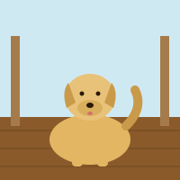
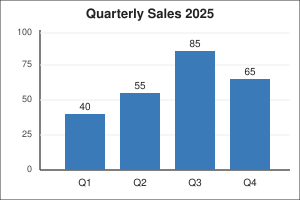
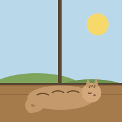

Static fixture exercising the alt-text relevance sub-procedure in
skills/a11y-scan/SKILL.md.
See README.md for the expected-signal oracle.
Image depicts a golden retriever sitting on a porch. Alt text matches. Expected: no signal.

Same dog image, wildly unrelated alt text. Expected: one a11y_violation tagged [alt-relevance].
A sales bar chart with "Weather forecast" alt text. Information-critical image (chart). Expected: one a11y_violation tagged [alt-relevance, information-critical].

Thin decorative horizontal rule. Author marked decorative with empty alt. Expected: no signal.
Cat on a windowsill; accessible name comes from figcaption. Alt text matches. Expected: no signal.

CSS-rendered orange warning triangle. Accessible name via aria-label on role="img". Expected: no signal.